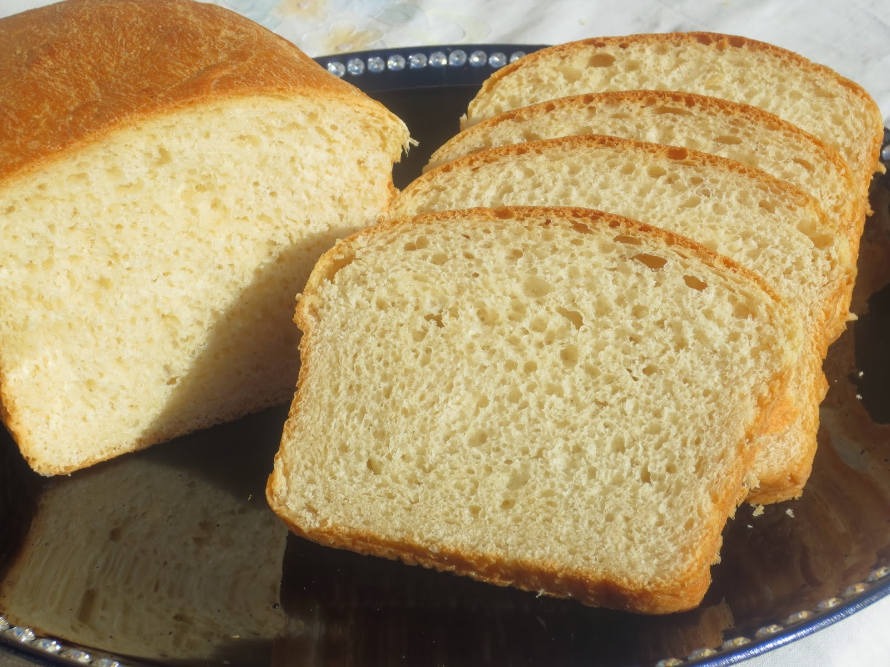

Pan de molde
Ingredientes para la masa:
- -Harina integral
- -Harina de trigo
- -Leche
- -Levadura
- -azucar y sal
- -mantequilla
Modo de preparación resumido:
- -Calentar la leche y disolver la levadura con un poco de azúcar en ella.
.
- -Mezclar harina, sal y la mezcla de leche y levadura.
- -Amasar hasta obtener una masa homogénea.
- -Dejar reposar la masa hasta que duplique su tamaño.
- -Dar forma a la masa en un molde para pan.
- -Hornear hasta que la barra de pan esté dorada y suene hueca al golpearla.
- ¡Listo! Ahora tienes una barra de pan de molde casera. Ajusta las proporciones según tus necesidades y preferencias